一元配置ANOVA
1WayANOVA
概要
統計では主にインデックスと素データの2つの入力データモードがあります。 通常、統計分析を実行するときにデータセットすべてを使用する必要はありません。そのためにOriginはデータを選択する方法をいくつか提供しています。 例えば、インタラクティブなデータセレクタボタンを使用して、グラフ上でデータを選択したり、「列ブラウザ」ダイアログを使ってデータを選択できます。
このチュートリアルでは、分散分析(ANOVA)統計検定を使って、これら2つの入力データモードを使って分析を実行する方法を学習します。
ANOVAは、いくつかのグループの平均を比較するパラメトリック検定のひとつで、独立した2標本のt検定を拡張したものです。 比較する集団が2つ以上ある場合には、t検定は適さないのでANOVA を使用します。例えば、5つのグループ間の平均をt検定で比較すると、対ごとにt検定を行います。それぞれに対して有意水準0.05で分析を行うため、誤って帰無仮説を棄却する確率確率（タイプ I エラーの確率）は1-(1-0.05)^10=0.401となってしまいます。 同じ条件でも、ANOVAを用いるとタイプ I エラーを犯す確率を0.05におさえることができます。
ANOVAは正規性と等分散を必要とします。 それ以外の場合、ノンンパラメトリック検定を使用します。
必要なOriginのバージョン:Origin 2016 SR0以降
学習する項目
このチュートリアルでは、以下の項目について解説します。
- 統計分析ダイアログで異なる入力データモードを使用する方法
- 正規性の検定を実行する
- 一元配置の分散分析を実行
ステップ
Originは、インデックスと素データの2つのモードでANOVAを実行することができます。
インデックスモードを使うときには、因子とデータの2列でデータが構成されている必要があります。
- 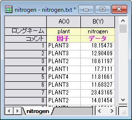
素データモードで行う場合、異なるレベルは異なる列に入力します。

インデックスデータモード
4種類の植物の窒素の含有量がミリグラム単位で記録されています。 植物の種類によって窒素の含有量が有意に異なるかどうかを調査します。 このサンプルに対しては、インデックスモードで一元配置ANOVAを実行します。
- 新しいワークブックを開き、ヘルプ: フォルダを開く: サンプルフォルダを選択して、サンプルフォルダを開きます。このフォルダ内のStatisticsサブフォルダにあるnitrogen.txt ファイルを探します。空のワークシートにファイルをドラッグアンドドロップしてインポートします。
- 次に、データの各グループに対して正規性の検定を実行し、正規分布に従うかを調べます。ワークブックの1列目を選択し、メインメニューのワークシート：ソート(ワークシート)：昇順を選択します。
- メインメニューの統計：記述統計：正規性検定を選択し、ダイアログを開きます。 正規性検定ダイアログで、入力ノードの範囲1ノードを開きます。データ範囲の右にある三角ボタンをクリックしてコンテキストメニューを表示し、B(Y): nitrogenを選択します。同様に、グループ範囲でもコンテキストメニューからA(X): plantを選択します。OKをクリックします。
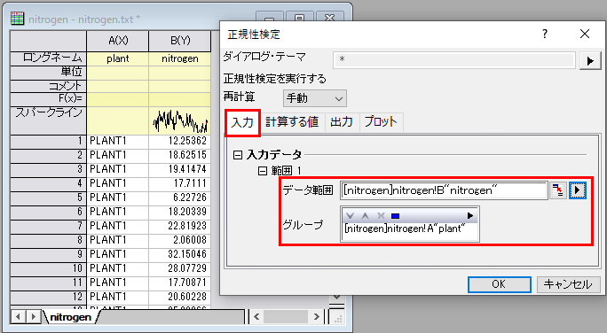
- ワークシートnitrogen をアクティブにして、メインメニューの統計：ANOVA：一元配置と選択します。ANOVAOneWayダイアログで、入力データモードをインデックスにします。 因子の右にある矢印ボタンをクリックし、コンテキストメニューでA(X): plant 列を選択し、同様にデータのコンテキストメニューから B(Y): nitrogen列を選択します。
- 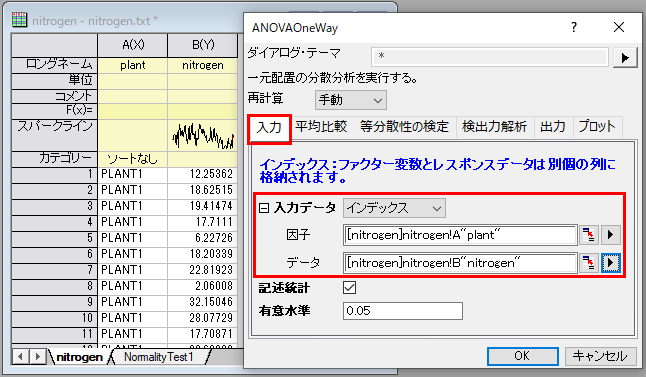
- 平均の比較タブを開き、Tukeyにチェックをつけます。等分散性の検定ブランチでは、Leveneにチェックを付けます。検出力解析では実際の検出力にチェックをつけ、プロットノードを開き、平均値プロット（SEをエラーバー表示）と平均比較プロットにチェックを付けます。 OKをクリックします。
- 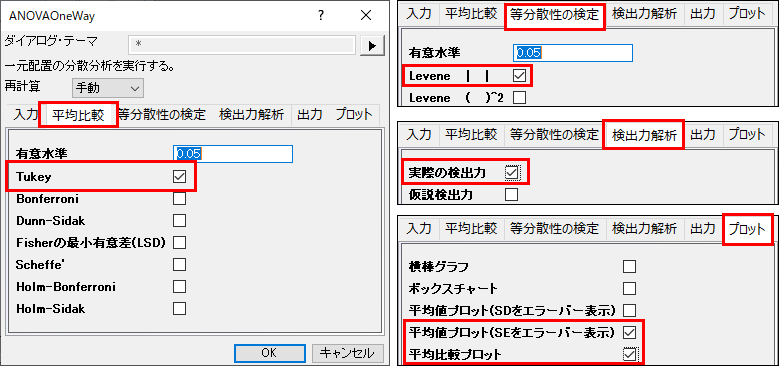
結果の解釈
- レポートシートANOVA1Wayにある「等分散性の検定」ノードで結果表を確認します。ノードを開くと表が表示されますp値が0.05より大きいので、4つの集団が等分散していると判断できます。
- 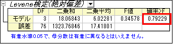
- ANOVAテーブル (全般ANOVA) で、p値が0.05よりも小さいので、4つのグループの内少なくとも2つが異なる平均値を持つことを有意に示しています。
- 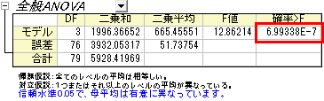
- 「平均比較」の結果を展開すると、グループ間の関係についての詳細情報が明らかになります。
- 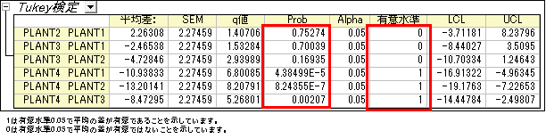
- PLANT4の平均が他の3グループとは有意に異なることが分かります。平均値プロットと平均比較プロットから、PLANT4は他の3つのグループと異なり、最も小さい平均をもつことがわかります。
- 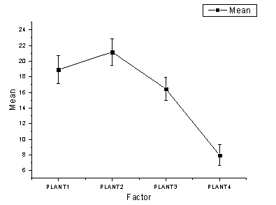
- 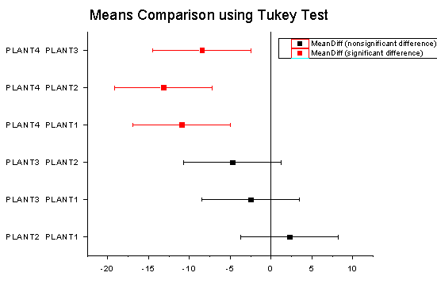
- パワー表で、実際のパワー＝0.99976であることからタイプ II エラーの確率はほぼ0であることがわかります。
- 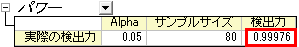
素データモード
- 新しいワークブックを開き、ヘルプ: フォルダを開く: サンプルフォルダを選択して、サンプルフォルダを開きます。このフォルダ内のStatisticsサブフォルダにあるnitrogen_raw.dat ファイルを探します。空のワークシートにファイルをドラッグアンドドロップしてインポートします。
- 統計：ANOVA：一元配置を選択します。
- 入力タブで、入力データを素データ値とし、レベルの数を4にします。
- データの右側にある参照ボタン
 をクリックして、ワークシートから選択するを選びます。ダイアログが縮小します。
をクリックして、ワークシートから選択するを選びます。ダイアログが縮小します。
- 4列全て（Plant1, Plant2, Plant3, Plant4）を選択して、ダイアログで完了ボタンをクリックします。OK をクリックしてANOVAを実行します。
- 得られた分析結果を分析すると、インデックスデータモードを使用した時と同様の結論が得られたことがわかります。
- 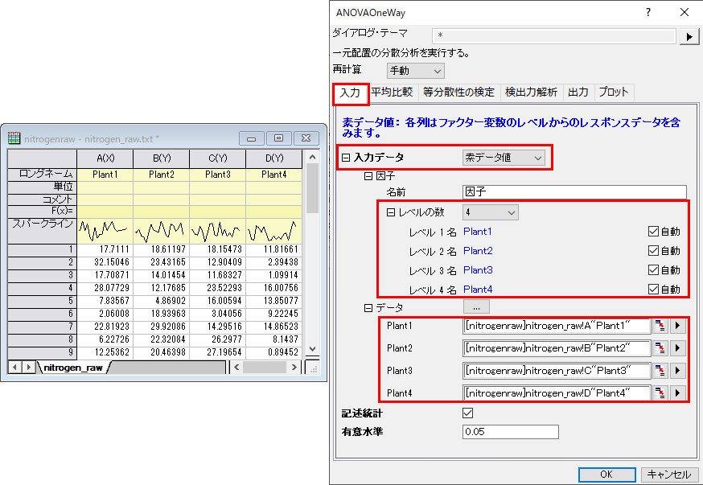
 | レベル名を自動に設定しておくと、選択された列のロングネームが自動的に表示されます。
|